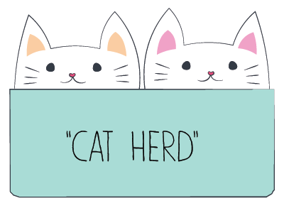

I'M ELOISA {pronounced "eh l oh ee s ah"}.

I have a background in digital illustration/fabric design, but after a decade of working in this field, I've shifted more into the User Experience and Web Development side of things. In 2013 I took a deviation from design and joined a tech startup where I explored various positions, my last position, as the Senior Buyer for now an international company, taught me important skills from product-development, project management and user testing points-of-views that I now apply to my user research exercises. Having this experience under my belt helps me think in business terms when I'm designing, which in turn allows for me to deliver better targeted materials.
I was promoted to Marketing Design Manager within 6 months of landing my first non-freelance design job. I'm a hard-worker and an awesome team-player. As a manager, I don't think of myself as a "boss", but as a mentor who's number one job is to do everything I can to ensure the team that's been trusted to me has all the tools, information, sugar, coffee, and whatever else we need to get the job done on time.
I would like to continue this trajectory and become a Creative Director, a Product Designer, or the allusive "Unicorn" that companies so badly want.
DESIGN

LEADERSHIP
DEVELOPMENT
I live in the colorful town of Fuquay Varina, NC, with my husband, my two girls and my parents. I love animals and have tons of pets: 8 dogs, 11 hens, 2 bunnies and 1 guinea pig. I volunteer a lot of my time to my kid's band boosters by running their website and organizing the bi-yearly BBQ's.
I love to craft, sew, ride in the back of my husban'd motorcycle, talk about fast cars {I drive a Dodge Challenger, 100th year special edition with a Hemmy}, and hit my 10K steps with my Fitbit {it's a thing!}.

"Eloisa is a wonderful person, an amazing designer and smart as a whip. I first knew of her as an artist on Spoonflower and always greatly admired her design chops and color skills. I loved working with her at Spoonflower because she was so fun and friendly, but also as a resource to collaborate on design. I can always trust her to give great artistic criticism and voice her opinion in a constructive way.
I'm constantly impressed by her initiative, especially this past year when she pursued an education in front end coding to add to her already impressive resume. If you're looking for someone hardworking with a fantastic attitude and super skills, Eloisa is your woman!"
- Caroline Okun, Art Director for StoneTimber
"I spent three months studying with Eloisa at The Iron Yard in Raleigh, NC. During this time I discovered Eloisa's extreme talent in rapid design, wireframing, and prototyping. She has the ability to go from nebulous idea to mid-fidelity in a matter of minutes.
Eloisa is a great team member, who gets along with everyone and has the ability to bring a group together to generate a product worth creating. I enjoyed working with her and learning from her vast wealth of design knowledge."
- Ashley Massengill, Front End Developer, Coalmarch Productions
"Eloisa is both a delight to work with and a highly talented UI and graphic designer. She will come up with an ambitious, beautiful, and sophisticated design no matter what the project might be. She is a master at the Adobe Creative Suite, she can code, and she's truly a positive presence and effective communicator. I am confident that she would excel in any role and any team is lucky to have her!"
- Lina Breslav, Designer, Smashing Boxes
"I had the pleasure of working alongside Eloisa on the Customer Service team at Spoonflower, and can say confidently that she is a rare gift as a teammate. Eloisa constantly showed a very high level of compassion, empathy, productivity, efficiency and creativity in her job, and you could tell that she takes immense pride in her work. Eloisa is always looking for how to solve a problem, never settling for the status quo, she uses her creativity and initiative to improve any situation, even if it means putting in extra work which she often did if it meant getting the job done right. In addition to being one of the hardest workers I know, her upbeat spirit is so strong and contagious, that it lifts up everyone around her. It is impossible to be sad around Eloisa. Her combined talents for interacting with people, unparalleled work ethic, and her creativity and problem solving nature make her a god-send to any company lucky enough to have her on their team."
- Theresa Rizzuto, Email Marketing Manager, Craftsy
"Great girl, but terrible cook!"
- Eloisa Rivera, Mom
"Great girl, but terrible cook!"
- Paul, Natalie & Claire Docton, Husband & Kids